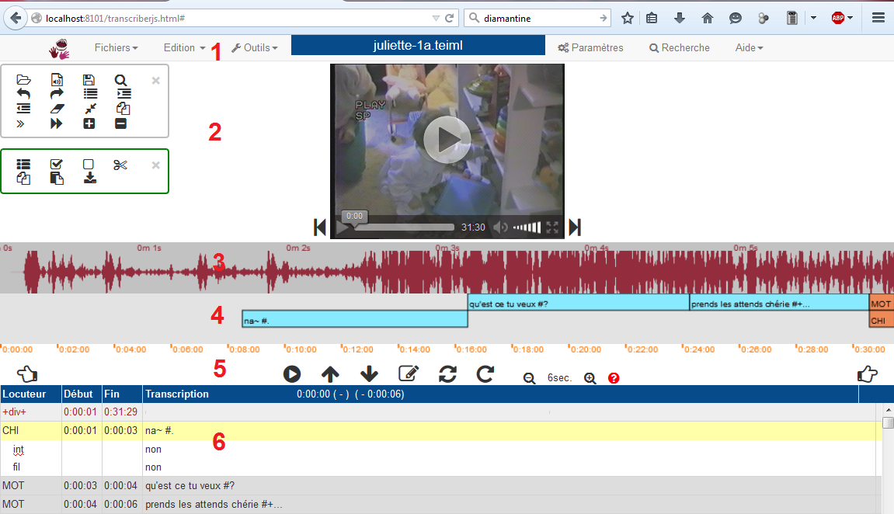
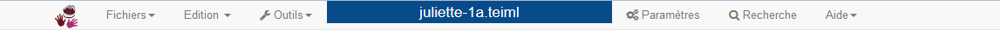
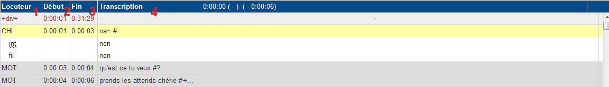
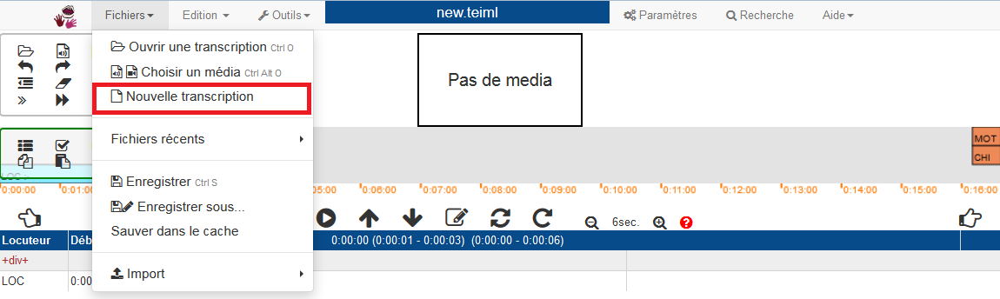
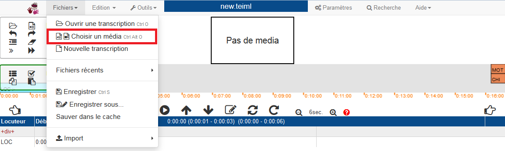
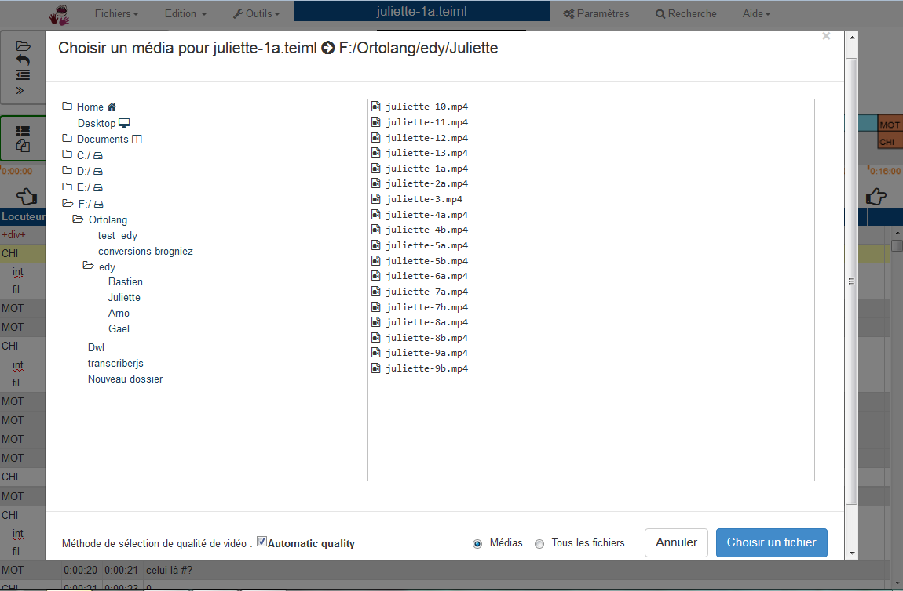

1. Comment installer TranscriberJS
1.1. Au préalable
Avant de procéder à l'installation de TranscriberJS, veuillez vérifier avoir effectué les installations et mises à jour suivantes:
- Avoir une version de votre système d'exploitation compatible:
- Mac OS :
- version minimum 10.7 (Lion)
- et plus récentes
- Windows :
- XP,
- Seven
- et 8
- Autres systèmes :
- Avoir un navigateur récent (c'est-à-dire implémentant les normes HTML5 et CSS3):
- Firefox, version 35 et plus récentes
 Chrome, version 31 et +
Chrome, version 31 et + Opera, version 26 et +
Opera, version 26 et + Safari, version 7.1 et +
Safari, version 7.1 et +- Internet Explorer, version 9 et +
1.2. Sous Windows
- Cliquez sur le lien de téléchargement.
Une fenêtre s'ouvre:
 Vous pouvez Enregistrer le fichier.
Vous pouvez Enregistrer le fichier. - Dans le dossier Téléchargements, vous trouverez le répertoire d'installation au format exécutable,
veuillez l'ouvrir avec un clic.
La fenêtre suivante apparaît: Il est conseillé de garder cochée la case Desktop Shortcuts
afin de pouvoir lancer le logiciel directement depuis le Bureau (Desktop) via un raccourci.
Il est conseillé de garder cochée la case Desktop Shortcuts
afin de pouvoir lancer le logiciel directement depuis le Bureau (Desktop) via un raccourci.
 Le répertoire par défaut est C:\TranscriberJS
Le répertoire par défaut est C:\TranscriberJS
Un autre répertoire peut-être utilisé, toutefois il est conseillé de laisser l'emplacement d'installation par défaut.
L'installation commence...Attention : Ne pas installer TranscriberJS dans le répertoire Program files (ou Program files (16 bits)).
- Les versions Windows comprennent l'installation du programme Node.js.
Cette installation est obligatoire s'il n'est pas déjà installé sur votre ordinateur.
La fenêtre d'installation de Node.js s'ouvre:

- S'il s'agit de votre première installation de Node.js, vous pouvez suivre les instructions.
- Si vous avez déjà installé Node.js, le message suivant apparaît :
 Ainsi vous pouvez sélectionner Change pour poursuivre l'installation
tout en vérifiant le bon fonctionnement de Node.js
ou vous pouvez annuler cette partie de l'installation en cas de mise à jour de TranscriberJS
Ainsi vous pouvez sélectionner Change pour poursuivre l'installation
tout en vérifiant le bon fonctionnement de Node.js
ou vous pouvez annuler cette partie de l'installation en cas de mise à jour de TranscriberJS
- L'installation de Node.js est terminée.

- L'installation de TranscriberJS est terminée elle aussi.
Vous pouvez fermer.

1.3. Sous Mac OS X
1.4. Autres systèmes
Autres systèmes
Pour les autres systèmes, utiliser la version distante.
Actuellement un espace de démonstration de l'usage à distance est disponible à l'adresse :
 http://modyco.inist.fr:8101/TranscriberJS
http://modyco.inist.fr:8101/TranscriberJS
2. Comment lancer TranscriberJS
2.1. Lancement à partir du Bureau (Desktop)
Windows
Deux icônes figurent sur le bureau après installation (ou dans le menu de démarrage sous TranscriberJS).
- Lancer d'abord l'icône
 transcriberserver
transcriberserver - Lancer ensuite autant de fois que désiré l'icône
 TranscriberJS
TranscriberJS
Mac OS X
Deux possibilités existent :
- Utilisation des commandes shell figurant dans /Applications/TranscriberJS
- transcriberserver.sh - doubler cliquer dans le Finder ou créer un alias que l'on peut déposer sur le bureau (démarrage du serveur à faire une seule fois)
- TranscriberJS.sh - doubler cliquer dans le Finder ou créer un alias que l'on peut déposer sur le bureau (à lancer aussi souvent que désiré)
- Applications disponibles dans le Volume transcriber-v0.3.1-nodejs.dmg
- transcribernode.app - à copier dans /Applications puis créer alias comme désiré (démarrage du serveur à faire une seule fois)
- TranscriberJS.app - à copier dans /Applications puis créer alias comme désiré (à lancer aussi souvent que nécessaire)
Autres systèmes
2.2. Lancement via un navigateur
Le programme peut être lancé directement à partir d'un navigateur récent implémentant les normes HTML5 et CSS3 :
- Firefox (toutes versions après 26.0, utilisable sur Windows XP, 7, 8, Mac OS X, Linux).
- Chrome (toutes versions après 33.0, utilisable sur Windows 7, 8, Mac OS X).
- Safari (toutes versions après 7.0, utilisable sur Mac OS X)
- Opera
- Internet Explorer
3. Avant de commencer une transcription
3.1. Présentation de la fenêtre TranscriberJS
Après avoir lancé TranscriberJS, le programme s'ouvre sur la fenêtre principale.
Cette fenêtre s'articule en différentes parties, comme découpées ci-dessous:

- La barre de menus, avec accès aux paramètres et fonctionnalités.
- Le champ média, encadré des barres d'outils pour l'édition de la transcription.
- Le signal, représentation sonore du média.
- La partition, représentation horizontale de la transcription.
- Les commandes média, boutons de lecture et d'édition de la transcription.
- La transcription, où on peut éditer notre texte.
3.2. La barre de menu : l'accès aux paramètres
La barre de menu est composée d'encarts cliquables :

L'onglet
L'onglet
L'onglet
L'onglet
L'onglet
L'onglet
L'onglet
3.3. Champ média
Le champ média contient la vidéo et/ou l'audio.

La barre de lecture est propre au média (et dépendante du navigateur utilisé),
elle apparaît lorsqu'on passe le curseur sur le média, puis disparaît après 3 secondes.
Elle offre les options suivantes :
- Revenir en arrière (3 secondes par défaut : valeur modifiable dans le menu
PARAMETRES ) ou raccourci clavier : Alt ← (ou F2) - Lecture simple/pause
- Barre de déplacement horizontal dans le média, avec position indiquée en hh:mm:ss
- Affichage du temps complet du média
- Volume (option muet)
- Plein écran ou raccourci clavier : ESC pour revenir à une taille miniature
- Sauter en avant ou raccourci clavier : Alt → (ou F3)
3.4. Signal
Le signal est une représentation sonore du média dans son intensité (densité d'énergie acoustique) en fonction du temps en secondes et de la fréquence en Hertz.

3.5. Partition
La partition est une représentation horizontale de la transcription (verticale) qui permet de visualiser intuitivement les chevauchements des tours de parole des locuteurs.

3.6. Boutons média
Autour du champ média (audio ou vidéo) sont déployés des boutons, associés à des raccourcis claviers.

Lorsqu'on passe la souris sur une icône, une bulle d'information apparaît pour rappeler la fonction principale de l'icône, ainsi que son raccourci clavier associé.
| Icône | Raccourci clavier | Fonctionnalité |
|---|---|---|
| Play/Pause : lecture simple (à partir de l'endroit où le curseur est situé) /!\ Cette fonction de lecture ne déplace pas le curseur positionné dans le tableau de transcription. | ||
| Set start : insertion dans la transcription du temps de début d'un segment à transcrire (à l'endroit où le curseur est situé dans le tableau de transcription) | ||
| Set end : insertion dans la transcription du temps de fin | ||
| Insert : insertion d'une ligne vide sous un locuteur dans la transcription | ||
| Repeat : lecture de la ligne courante (où se situe le curseur dans la transcription) | ||
| Go continuous : lecture continue (à partir de l'endroit où se situe le curseur) | ||
| Backward : recule (déplacement de une image, de une seconde, à l'extrémité de la partition) | ||
| Forward : avance | ||
| Zoom : L'option zoom permet d'agrandir ou de rétrécir la visualisation du signal et de la partition et ce jusqu'à 2,6 secondes. |
3.7. Transcription
La transcription orthographique du signal est éditée sous forme de tableau déroulable
(la barre de défilement vertical se trouve sur la droite).
Le tableau de transcription est une visualisation verticale éditable du texte.

3.8. Barres d'outils

Les barres d'outils permettent d'accéder très rapidement aux principales commandes d'édition.
Chaque icône est également définie par un raccourci clavier,
qui s'affiche au moyen d'une infobulle lorsqu'on passe la souris par dessus.
On peut rétrécir ou déplacer les barres d'outils.
4. Ouvrir une transcription
4.1. Créer une nouvelle transcription
Dans le menu

Si le média n'est pas ouvert, voir Ouvrir un média, puis vous pouvez commencer la transcription.

La partie transcription est désormais éditable à l'endroit indiqué.

4.2. Ouvrir une transcription existante
4.2.1. Ouvrir une transcription sur le serveur
Dans le menu

Une fenêtre s'ouvre :

- A gauche, l'arborescence de l'ordinateur permet de naviguer dans les répertoires (double-clic pour ouvrir un dossier)
- A droite, visualisation du contenu d'un répertoire : seulement les fichiers s'affichent
- En bas à droite, sélection seule des fichiers de transcription, ou toutes les extensions de fichiers à visualiser. (Voir Formats de la transcription.)
La transcription est chargée, mais vous n'avez pas de fichier média, comme indiqué.

4.2.2. Ouvrir une transcription locale
Dans le menu

Vous pouvez naviguez dans votre arborescence classique pour charger un fichier.
5. Lire un média
5.1. Charger un média
Dans le menu
Une fenêtre s'ouvre :

- A gauche, l'arborescence de l'ordinateur permet de naviguer dans les répertoires (double-clic pour ouvrir un dossier)
- A droite, visualisation du contenu d'un répertoire : seulement les fichiers s'affichent
- En bas à droite, sélection seule des fichiers média, ou toutes les extensions de fichiers à visualiser. (Voir Formats de la transcription.)

Si tout s'est déroulé sans encombre, le média est chargé.
Sinon, un message d'erreur vous avertit d'un éventuel problème de compatibilité avec le format média.
5.2. Correspondances des formats média reconnus par TranscriberJS dans les navigateurs
Si votre média ne s'ouvre pas, peut-être s'agit d'un proiblème de correspondance entre le format de ce média et votre navigateur. Voici un tableau de correspondance des formats compatibles aves les navigateurs principaux:| Navigateur Format | Mozilla Firefox | Internet Explorer | ||
|---|---|---|---|---|
| MP4 (.mp4) | ||||
| OGG (.ogv) | ||||
| WebM (.webm) |
5.3. Gestion du média
5.3.1. Fonctions de lecture
Plusieurs commandes et boutons de lecture du média sont disponibles, chacun a des fonctionnalités et des champs d'actions spécifiques :
| Icône ou raccourci clavier | Fonctionnalité | Description |
|---|---|---|
| TAB | Lecture à partir du début de la ligne courante, pause | |
| F1 | Lecture simple, pause | correspond au bouton média masqué, apparaît lorsqu'on passe le curseur sur le média - fonction totalement indépendante de la transcription |
| Shift + F1 | Lecture à partir du média, pause | |
| Alt + F1 | Lecture à partir de la transcription (endroit où le curseur est situé), pause | |
| Shift + TAB | Lecture à partir du début de la ligne courante | permet de relire en boucle à partir du même endroit |
| F7 | Lecture de la ligne courante | segment temporel seulement |
| Alt F7 | Lecture de 3 lignes autour de la ligne courante | permet d'isoler un contexte |
| F8 | Lecture continue à partir de la ligne courante |
6. Edition de la transcription
6.1. Structure de la transcription
La transcription orthographique du signal est éditée sous forme de tableau déroulable (la barre de défilement vertical se trouve sur la droite).
Le tableau de transcription est une visualisation verticale éditable du texte.
Le tableau de trancription est divisé en quatre colonnes :
- Locuteur - Ce champ renseigne l'identifiant du locuteur ou l'identifiant de la structure de ligne (dépendante du locuteur).
- Chaque nouveau locuteur doit être renseigné dans le tableau des participants
- Chaque nouvelle valeur de structure doit être renseignée dans le tableau des structures
- Visuellement, les structures supplémentaires s’imbriquent sous le locuteur (qui est la ligne principale par défaut)
- Start - le temps de début et
- End - le temps de fin
- Un clic permet d'obtenir le temps en millisecondes (par défaut)
- L'affichage du nombre et du format pour les millisecondes est modifiable dans le menu paramètres.
- Transcription - la partie texte éditable
- Les nuances de gris sur les lignes correspondent aux locuteurs, il y a 3 nuances du gris foncé au blanc: plus le gris est foncé, plus la fréquence du temps de parole du locuteur est élevée.
- La ligne sélectionnée est surlignée en bleu (en bleu clair pour une ligne dépendante)
Le positionnement sur une zone transcrite positionne la partition (si possible c'est à dire si la transcription est liée temporellement) et le temps du média.
6.2. Edition des métadonnées
Un clic sur le nom du fichier (encart bleu) situé en haut, dans la barre de menu, permet d'éditer les métadonnées.

On accède également au tableau d'édition des métadonnées en passant par le menu
Le tableau s'affiche pour l'édition, et se ferme à l'aide de la croix grise située en haut à droite.
Chaque ligne éditée du tableau s'enregistre automatiquement.
Seules les parties grisées sont éditables.
Ces champs permettent de rentrer les informations générales sur le document y compris sur les noms de fichiers,
mais aussi de rentrer les informations sur les champs métadonnées
Dublin-Core.
Pour obtenir des informations supplémentaires, passez votre souris sur la partie Information située à droite du tableau,
une infobulle apparaît.
Pour se déplacer :
- dans la colonne de droite, presser TAB
- vers la gauche, faire Shift + TAB
6.3. Edition des locuteurs
Un clic droit sur le locuteur (colonne de droite) dans le tableau de transcription, permet de choisir le nom du locuteur ou la valeur de la tier à définir pour la ligne courante.

Une fois le clic droit activé dans le champ Locuteur (Locutor), un encart s'affiche proposant :
- à gauche, les valeurs de la catégorie Participant (Person) - ici, nous avons 3 locuteurs : CHI, MOT et OBS
- à droite, les valeurs de la catégorie Structure (Template)
- il est possible d'ouvrir une division (+div+), de la fermer (-div-), de coder un incident (+incident+) ou une pause (+pause+)
- Cancel ferme l'onglet
Ces valeurs sont des raccourcis vers les valeurs autorisées dans les entêtes de fichier,
renseignées au préalable.
Si le code choisi n'est pas défini dans les noms de personnes ou tiers autorisés,
le logiciel vous demande de changer la valeur et insère la valeur neutre "---".
Voir Paramètres d'édition des locuteurs pour insérer ou modifier les valeurs.
Pour définir et renseigner un nouveau participant, sélectionner dans le menu
Tout un ensemble de champs complémentaires est disponible pour fournir des informations sur un locuteur.
Il est également possible d'inscrire directement un locuteur ou une tier enregistré au préalable à l'aide d'un raccourci clavier :
| Raccourcis clavier | Codage direct du locuteur |
|---|---|
| Ctrl + 1 | premier locuteur |
| Ctrl + 2 | deuxième locuteur |
| ... | ... |
| Ctrl + 9 | neuvième locuteur |
| Codage direct du tier (champ décrivant un énoncé) | |
| Ctrl + Alt + 1 | première propriété des templates (tiers secondaires) |
| Ctrl + Alt + 2 | deuxième propriété |
| ... | ... |
| Ctrl + Alt + 9 | neuvième propriété |
6.4. Edition des valeurs temporelles
Dans le tableau de transcription, il est possible d'éditer les valeurs temporelles de début et de fin en double cliquant sur la valeur à modifier.
Un simple clic permet de visualiser le nombre de millisecondes.
Il est possible de paramétrer le format d'affichage des données temporelles dans le menu
- hms - segmentation lettrée
- 00:00 - n'affiche pas les heures
- h:00:00 - indique explicitement le nombre d'heures
- 00:00:00 - par défaut
Le chiffre de millisecondes à afficher est modifiable (de 0 à 3). Par défaut, on affiche 0 millisecondes.
6.5. Enregistrer la transcription (formats et conversions)
Vous pouvez à tout moment sauvegarder la transcription en cours :
- avec le raccourci clavier Ctrl + S
- avec l'icône situé dans la barre d'outils
- ou en accédant dans le menu
FICHIERS à l'encart Enregistrer.
Vous pouvez définir ou modifier l'emplacement de votre fichier de transcription
en accédant à l'encart Enregistrer sous... du menu
Les options d'exports sont disponibles dans le menu
Il est possible d'exporter la totalité du fichier ou seulement une sélection.
7. Méthodes de transcription
7.1. Usages de transcription et commandes d'édition
La touche Enter/Return fonctionne de la manière suivante :
- Alignement de la fin de l'énoncé avec le temps courant puis saut à la ligne suivante.
- Si on est en fin de fichier, alors insertion d'une ligne.
La touche Return/Entrée correspond au raccourci clavier : Ctrl + M, accessible via l'icône de la barre d'outils.
Certaines touches du clavier sont destinées à marquer les alignements temporels dans le tableau de transcription :
| Raccourcis clavier | Commandes d'édition |
|---|---|
| Return (Entrée) | Fonction de remplacement (ou Ctrl + M), alignement de la fin de l'énoncé avec le temps courant puis saut à la ligne suivante; si on est en fin de fichier, alors insertion d'une ligne (ceci permet de réaligner des lignes déjà transcrites). |
| F4 | Alignement du début de l'énoncé avec le temps courant |
| F5 | Alignement de la fin de l'énoncé avec le temps courant |
| F6 | Création (insertion) d'une nouvelle ligne sous le curseur sans insérer d'élément temporel ni de locuteur |
| Alt + F6 | Insérer une ligne vide sous un locuteur en notant le temps courant |
| Ctrl + I | Insérer une ligne vide |
| Ctrl + Alt + I | Insérer une ligne vide avec le temps courant |
| Ctrl + M | Marquer le temps de la fin de la ligne courante principale et le temps de début de la suivante et sauter à la ligne suivante |
| Ctrl + Alt + M | Marquer le temps de la fin de la ligne courante et le temps de début de la suivante |
| Ctrl + T | Aller au repère temporel |
7.2. Commandes d'annulation
Annuler la dernère action
La commande d'annulation (undo) annule la dernière action au moyen du raccourci clavier Ctrl Z.
Historique des dernières actions
En ouvrant le menu
Reproduire la dernière action
Pour reproduire la dernière action (redo), le raccourci clavier est Ctrl Y.
8. Manipulation du clavier
8.1. Commandes d'édition
TranscriberJS est prévu pour la transcription et l'alignement rapide, et la manipulation intuitive de la vidéo/du son. Il est optimisé pour être utilisé facilement (et complètement) depuis le clavier, sans nécessité d'utiliser la souris.
8.1.1. Commandes d'édition principales
| Raccourci clavier | Fonctionnalité |
|---|---|
| Commandes de lecture : Certaines touches du clavier sont destinées à manipuler le média | |
| F1 | Lecture simple et pause |
| Tab | Lecture à partir du début de la ligne courante, pause (ou tabulation) |
| Alt + F1 | Lecture à partir de l'endroit où le curseur est situé, pause |
| Shift + Tab | Lecture à partir du média, pause |
| Shift + F1 | Lecture à partir du début de la ligne courante |
| Escape | Pause |
| Alt + ← (ou F2) | Revenir en arrière (3 secondes par défaut) (La valeur de retour en arrière ou de saut en avant est modifiable dans le tableau des paramètres.) |
| Alt + → (ou F3) | Sauter en avant |
| Alt + F2 | Agrandir la vidéo |
| Alt + F3 | Rétrécir la vidéo |
| Alt + F4 (ou Ctrl + B) | Jouer la vidéo moins vite |
| Alt + F5 (ou Ctrl + E) | Jouer la vidéo plus vite |
| F7 | Lecture de la ligne courante (où se situe le curseur dans la transcription) |
| Alt + F7 | Lecture de la ligne courante, la ligne précédente et la suivante (3 lignes principales) |
| F8 | Lecture continue (à partir de l'endroit où se situe le curseur) |
| Commandes d'édition : Certaines touches du clavier sont destinées à marquer les alignements temporels dans le tableau de transcription | |
| Return (Entrée) | Si Return est en mode Remplacement (par défaut, ou Ctrl + M), alignement de la fin de l'énoncé avec le temps courant puis saut à la ligne suivante; si on est en fin de fichier, alors insertion d'une ligne (ce mode permet de réaligner des lignes déjà transcrites). Si Return est en mode Insertion (ou Alt + F6), insertion d'une ligne et notation du temps courant (Le comportement de Return peut être modifié dans le tableau des paramètres.) |
| F4 | Alignement du début de l'énoncé avec le temps courant |
| F5 | Alignement de la fin de l'énoncé avec le temps courant |
| F6 | Création (insertion) d'une nouvelle ligne sous le curseur sans insérer d'élément temporel ni de locuteur |
| Alt + F6 | Insérer une ligne vide sous un locuteur en notant le temps courant |
8.1.2. Edition par raccourcis des locuteurs et autres tiers
| Raccourcis clavier | Codage direct du locuteur |
|---|---|
| Ctrl + 1 | Premier locuteur |
| Ctrl + 2 | Deuxième locuteur |
| ... | ... |
| Ctrl + 9 | Neuvième locuteur |
| Codage direct du tier (champ décrivant un énoncé) | |
| Ctrl + Alt + 1 | Première propriété des templates (tiers secondaires) |
| Ctrl + Alt + 2 | Deuxième propriété |
| ... | ... |
| Ctrl + Alt + 9 | Neuvième propriété |
8.1.3. Commandes d'édition spécifiques
| Raccourci clavier | Fonctionnalité |
|---|---|
| Commandes d'édition classiques | |
| Ctrl + O | Ouvrir un fichier |
| Ctrl + Alt + O | Charger un média |
| Ctrl + S | Sauvegarder |
| Ctrl + F | Lancer une recherche |
| Ctrl + A | Tout sélectionnner |
| Ctrl + Y | Reproduire la dernière action |
| Ctrl + Z | Annuler la dernière action |
| Commandes de déplacement | |
| Ctrl + L | Aller à un numéro de ligne |
| ↑ | Aller à la ligne précédente |
| ↓ | Aller à la ligne suivante |
| Alt + ↑ | Aller à la ligne principale précédente |
| Alt + ↓ | Aller à la ligne principale suivante |
| Page haut | Aller en haut de la page |
| Page bas | Aller en bas de la page |
| Ctrl + Home | Aller au début du fichier |
| Ctrl + End | Aller à la fin du fichier |
| Commandes d'édition des alignements temporels | |
| Ctrl + I | Insérer une ligne vide |
| Ctrl + Alt + I | Insérer une ligne vide avec le temps courant |
| Ctrl + M | Marquer le temps de la fin de la ligne courante principale et le temps de début de la suivante et sauter à la ligne suivante |
| Ctrl + Alt + M | marquer le temps de la fin de la ligne courante et le temps de début de la suivante |
| Commandes d'édition de la transcription | |
| Ctrl + D | Supprimer une ligne |
| Ctrl + Alt + D | Supprimer une ligne et tous les tiers qui en dépendent |
| Ctrl + J | Joindre deux lignes (ligne courante et la suivante) |
| Ctrl + Alt + J | Joindre deux lignes sous un même locuteur |
| Ctrl + R | Dupliquer une ligne |
| Ctrl + Alt + R | Scinder une ligne en deux (à l'endroit où se trouve le curseur) sans indication temporelle |
| Divisions du texte | |
| Ctrl + G | Créer une division du texte (séquence ou saynète) |
| Ctrl + Alt + G | Marquer la fin d'une division |
| Ctrl + Shift + G | Fermer toutes les divisions ouvertes |
| Ctrl + U | Cacher les divisions |
| Ctrl + Alt + U | Montrer les divisions cachées |
| Ctrl + Shift + 1 | Marquer la ligne courante comme début d'une division |
| Ctrl + Shift + 2 | Marquer la ligne courante comme fin d'une division |
| Commandes média spécifiques | |
| Ctrl + B (ou Alt + F4) | Jouer le média plus lentement |
| Ctrl + E (ou Alt + F5) | Jouer le média plus rapidemement |
| Ctrl + Alt + B | Lecture à l'envers |
| Ctrl + Alt + E | Lecture à un rythme normal |
8.2. Insertion de caractères phonologiques
TranscriberJS permet d'insérer des caracatères API (pour le codage phonologique).
En général, faire :
- Alt + Caractère SAMPA ou
- Alt + Shift + Caractère SAMPA.
| Raccourci clavier | Correspondance API | Description |
|---|---|---|
| Alt + A | ɑ | Voyelle basse postérieure non arrondie |
| Alt + E | ɛ | Voyelle moyenne inférieure antérieure non arrondie |
| Alt + O | ɔ | Voyelle moyenne inférieure postérieure arrondie |
| Alt + 9 | œ | Voyelle moyenne inférieure antérieure arrondie |
| Alt + 2 | ø | Voyelle moyenne supérieure antérieure arrondie |
| Alt + @ (ou Alt + 0) | ə | Schwa |
| Alt + R | ʀ | Consonne roulée uvulaire voisée |
| Alt + S | ʃ | Consonne fricative post-alvéolaire sourde |
| Alt + Z | ʒ | Consonne fricative post-alvéolaire voisée |
| Alt + H | ɥ | Consonne spirante labio-palatale voisée |
| Alt + J | ɲ | Consonne occlusive nasale palatale voisée |
| Alt + N | ɳ | Consonne occlusive nasale rétroflexe voisée |
| Alt + Shift + N | ŋ | Consonne occlusive nasale vélaire voisée |
| Alt + T | θ | Consonne fricative dentale sourde |
| Alt + D | ð | Consonne injective alvéolaire voisée |
| Alt + I | ɪ | Voyelle haute inférieure antérieure non arrondie |
| Alt + Q | ɒ | Voyelle basse postérieure arrondie |
| Alt + V | ʌ | Voyelle moyenne inférieure postérieure non arrondie |
| Alt + U | ʊ | Voyelle haute inférieure postérieure arrondie |
| Alt + X | χ | Consonne fricative uvulaire sourde |
| Alt + : | ː | Long |
| Alt + Shift + A | ɑ̃ | Voyelle nasale basse postérieure non arrondie |
| Alt + Shift + E | ɛ | Voyelle nasale moyenne inférieure antérieure non arrondie |
| Alt + Shift + 9 | œ̃ | Voyelle nasale moyenne inférieure antérieure arrondie |
| Alt + Shift + O | ɔ̃ | Voyelle nasale moyenne inférieure postérieure arrondie |
| Alt + Shift + Q | æ | Voyelle pré-ouverte antérieure non arrondie |
9. Organisation et fonctionnalités
9.1. Paramètres
Dans le menu
| Paramètre | Descriptif | Localisation |
|---|---|---|
| Version | Deux versions sont pour le moment disponibles : Français et Anglais | Onglet |
| Visualisation de la partition | Coché par défaut | Onglet |
| Visualisation du signal sonore | Coché par défaut | Onglet |
| Affichage des numéros en début de ligne | Par défaut ils ne sont pas affichés | Onglet |
| Affichage des noms des participants | A la place des codes | Onglet |
| Affichage des temps des alignements | C'est-à-dire les temps de début et de fin, coché par défaut | Onglet |
| Modes d'édition des zones d'affichage | 3 modes sont disponibles : Libre, Contrôle (Standard), Bloqué | Onglet |
| Réorganisation dynamique des lignes | Onglet | |
| Format pour les repères temporels | Renseigné par défaut en h:mm:ss | Onglet |
| Nombre de chiffres pour les millisecondes | De 0 à 3 | Onglet |
| Valeur de retour en arrière | (Pour le raccourci clavier : | Onglet |
| Valeur de saut en avant | (Pour le raccourci clavier : | Onglet |
| Vérification de la transcription lors de la sauvegarde | Coché par défaut | Onglet |
| Nombre de versions précédentes conservées lors de la sauvergarde | De 1 à 3 | Onglet |
Lorsqu'on passe la souris sur un paramètre, une bulle d'information apparaît pour rappeler sa fonction principale, ainsi que son raccourci clavier éventuel associé.
9.2. Outil de recherche
L'onglet de recherche s'affiche sous forme de panneau. On y accède par plusieurs moyens :
- en ouvrant le menu
RECHERCHE - en cliquant sur l'icône de la barre d'outils
- via le raccourci clavier : Ctrl F
Il est possible d'effectuer plusieurs types de recherche dans le fichier courant :
- Rechercher un mot ou une chaîne de caractères :
- dans le champ Locuteurs
- dans le champ Transcription
- Remplacer le résultat de la recherche
- Montrer les locuteurs ou les tiers :
- dans le champ Locuteurs (permet d'afficher seulement le locuteur/la tier sur laquelle on travaille)
- dans le champ Transcription (permet d'afficher toutes les mentions d'un locuteur/une tier dans la transcription)
- Cacher les locuteurs ou les tiers :
- dans le champ Locuteurs (permet de cacher les locuteurs/tiers désirés)
- dans le champ Transcription
- Aller à un numéro de ligne ou le raccourci clavier : Ctrl L
- Aller à un repère temporel ou le raccourci clavier : Ctrl T